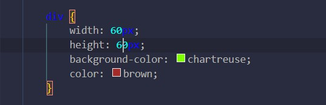
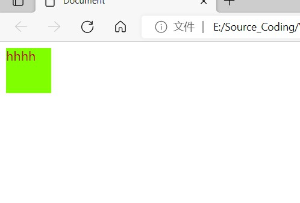
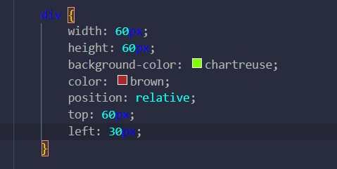
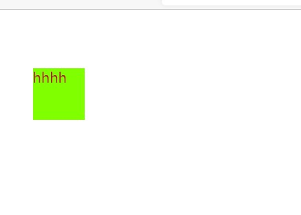
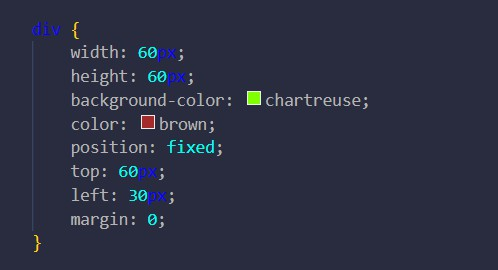
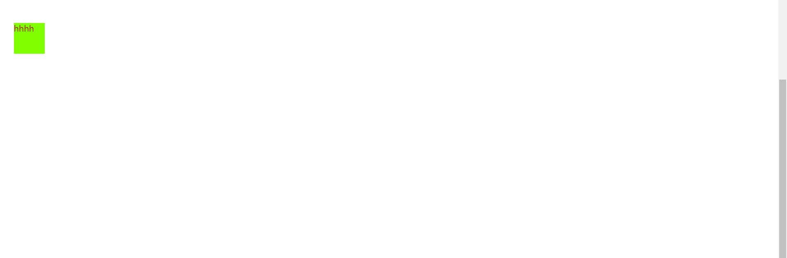

#定位
position,定位相对哪一片空间进行定位不由得发问？ 没错，当然是显示器，更准确的说是视口（视觉入口），其坐标原点一般为左上位置。并且只有设置了position才能使用top,bottom,left,right,否则无法生效。 其属性值包括： static静态; relative相对; fixed固定; absolute绝对
默认为static,就是该怎么样就怎么样。 而relative，则是相对于static进行偏移  这是静态的渲染效果： 
之所以会和边界有些距离是因为margin不为0；
然后呢，做一些调整：

渲染效果： 
相对于原来位置偏移了，上方偏移了60px,左边30px.
修改为fixed: 
渲染效果变成了：

相对于整个视口固定了
当修改为absolute则是相对于父元素进行定位，请与relative进行一些区分。